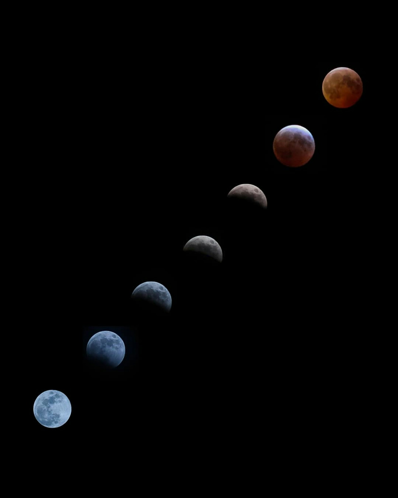
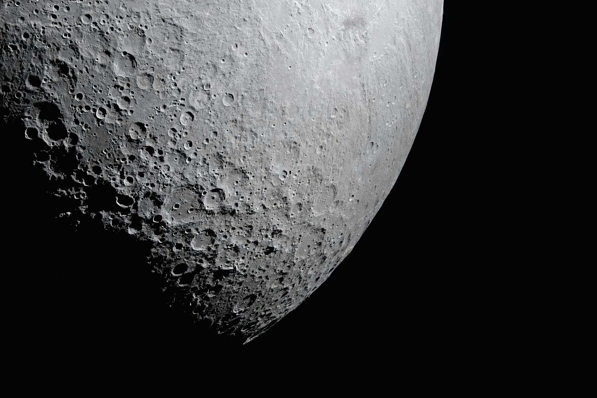
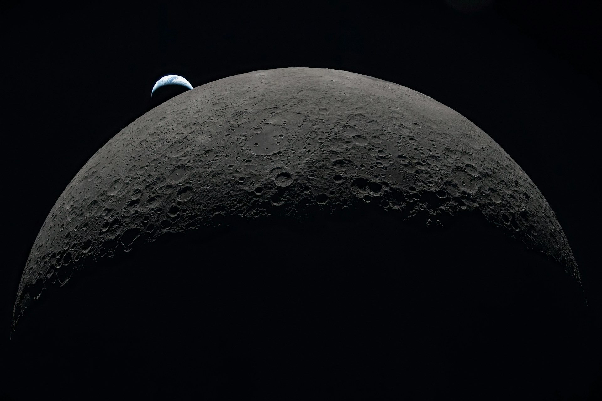
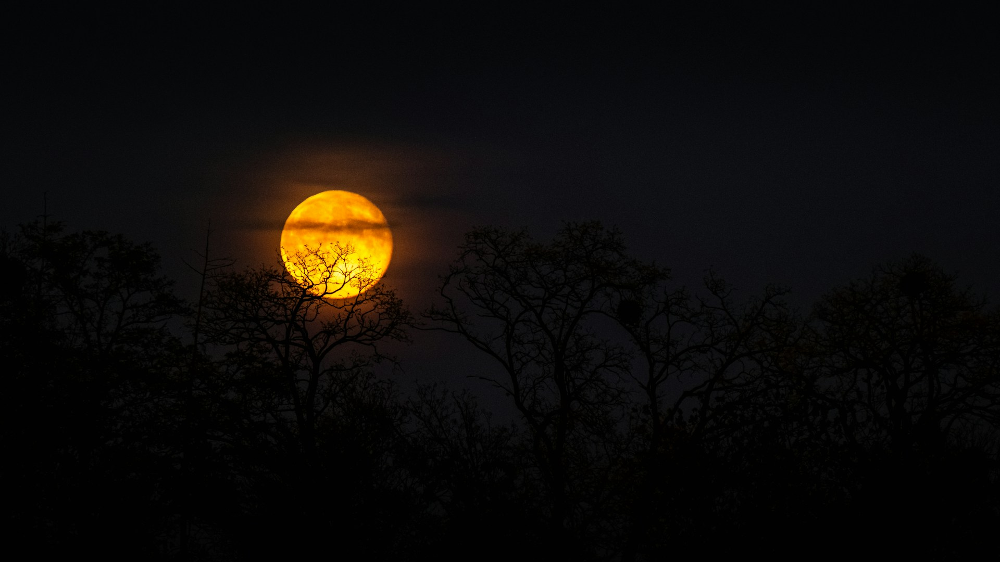

Earth's only natural satellite
The Moon
Every 29.5 days the Moon cycles through 8 recognizable phases as it orbits Earth. Drag the slider below to preview each one, then explore facts, imagery, and the history of lunar exploration.
- Diameter
- 3,474 km
- Avg. distance
- 384,400 km
- Orbital period
- 27.3 days
- Full cycle
- 29.5 days
New Moon
0% illuminatedViewing tip:
Drag, use the arrows, or tap a phase below
Fun Facts
Always the same face
The Moon is tidally locked to Earth, so the same side always faces us; the "far side" was never seen until spacecraft photographed it.
Slowly drifting away
The Moon moves about 3.8 cm farther from Earth every year, roughly the speed your fingernails grow.
Extreme temperatures
With no atmosphere to trap heat, the surface swings from about 127°C in direct sunlight to -173°C in shadow.
Footprints that last
Without wind or water to erode them, astronaut footprints left in the lunar dust could remain visible for millions of years.
Moonquakes
Apollo seismometers recorded "moonquakes" caused by tidal stress; some tremors rang on for over 10 minutes.
Supermoons
When a full moon lines up with its closest approach to Earth (perigee), it can look up to 14% bigger and 30% brighter.
Gallery

Phases in Sequence

Cratered Surface

Earthrise

Moonrise
Lunar Exploration Timeline
Click a milestone to read about it.